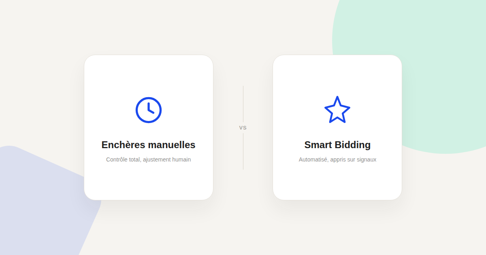
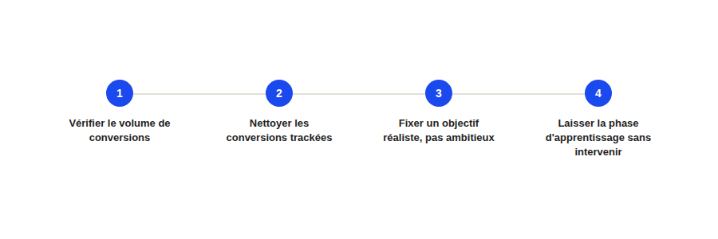

Smart Bidding : ce qu'il faut vérifier avant de lui laisser le volant
« On est passés en Smart Bidding et les résultats se sont effondrés » — c'est presque toujours un problème de préconditions, pas un défaut de l'algorithme lui-même. Voici ce qui détermine si le Smart Bidding va vous servir ou vous coûter cher.

Le Smart Bidding (enchères automatiques pilotées par l'algorithme de Google — tCPA, tROAS, Maximiser les conversions) n'est ni une solution miracle ni une menace à éviter par principe. C'est un outil qui a besoin de préconditions précises pour bien fonctionner, et qui produit des résultats erratiques quand ces préconditions manquent — ce qui explique pourquoi deux comptes avec le même réglage vivent des expériences opposées.
La précondition qu'on oublie le plus : le volume de conversions
Le Smart Bidding a besoin d'un volume de conversions suffisant pour apprendre les signaux qui prédisent une conversion — Google recommande généralement un minimum de conversions par mois selon la stratégie choisie, un seuil en dessous duquel l'algorithme manque de données pour bien apprendre. Un compte qui génère quelques conversions par mois ne donne tout simplement pas assez de matière à l'algorithme, quelle que soit la qualité de la campagne par ailleurs.
La qualité des conversions trackées compte plus que leur volume
Le Smart Bidding optimise exactement ce qu'on lui dit d'optimiser — s'il apprend sur des conversions mal qualifiées (un simple clic sur un bouton plutôt qu'un vrai lead, un abandon de panier compté comme achat par erreur de configuration), il va sur-enchérir pour obtenir davantage de ce signal bruité. Avant d'activer une stratégie automatique, la première vérification est toujours de s'assurer que les conversions trackées correspondent réellement à de la valeur business.
Fixer un objectif réaliste, pas ambitieux
Régler un tCPA très inférieur au coût par acquisition réel observé pousse l'algorithme à chercher un résultat qu'il ne peut pas atteindre avec le budget et la concurrence en place — ce qui se traduit souvent par une chute du volume de conversions plutôt qu'un coût plus bas. Le bon réglage de départ se base sur les performances historiques réelles, pas sur l'objectif qu'on aimerait atteindre.

Ne pas intervenir pendant la phase d'apprentissage
Chaque changement significatif (budget, enchère cible, ciblage) relance une phase d'apprentissage pendant laquelle les performances sont généralement instables. Le réflexe de « corriger » une campagne qui semble sous-performer pendant cette phase, en changeant à nouveau les réglages, prolonge l'instabilité au lieu de la résoudre — la patience est ici une vraie compétence, pas juste une posture.
Ce que je vérifie systématiquement avant d'activer une stratégie automatique
Dans les audits que je mène, la bascule en Smart Bidding qui échoue a presque toujours la même origine : un volume de conversions insuffisant, des conversions mal qualifiées, ou un objectif fixé sans base historique réelle. Ce n'est pas Smart Bidding et Performance Max qui posent problème — un rappel utile puisque les deux sont souvent confondus : Smart Bidding est la couche d'enchères, utilisée à l'intérieur de plusieurs types de campagnes dont Performance Max, mais aussi dans des campagnes Search classiques où le contrôle créatif et le ciblage restent, eux, entièrement dans vos mains.
FAQ
Combien de conversions faut-il par mois pour utiliser le Smart Bidding ?
Le seuil exact dépend de la stratégie choisie et évolue avec les recommandations de Google — dans tous les cas, un très faible volume de conversions mensuelles reste le signal le plus fiable qu'il vaut mieux attendre avant d'activer une stratégie entièrement automatique.
Le Smart Bidding et Performance Max sont-ils la même chose ?
Non : Smart Bidding est la stratégie d'enchères, utilisée dans plusieurs types de campagnes. Performance Max est un type de campagne complet qui automatise aussi le ciblage et la diffusion des créations, au-delà des seules enchères.
Combien de temps dure la phase d'apprentissage ?
Elle varie selon le volume de conversions et l'ampleur du changement effectué, généralement de quelques jours à quelques semaines. Éviter d'intervenir pendant cette période reste la meilleure pratique, sauf signal de performance clairement anormal.
Envie d'un audit de vos stratégies d'enchères Google Ads ?
Pour aller plus loin, voir la page SEA, et l'article Performance Max.
Pour continuer sur ce sujet.